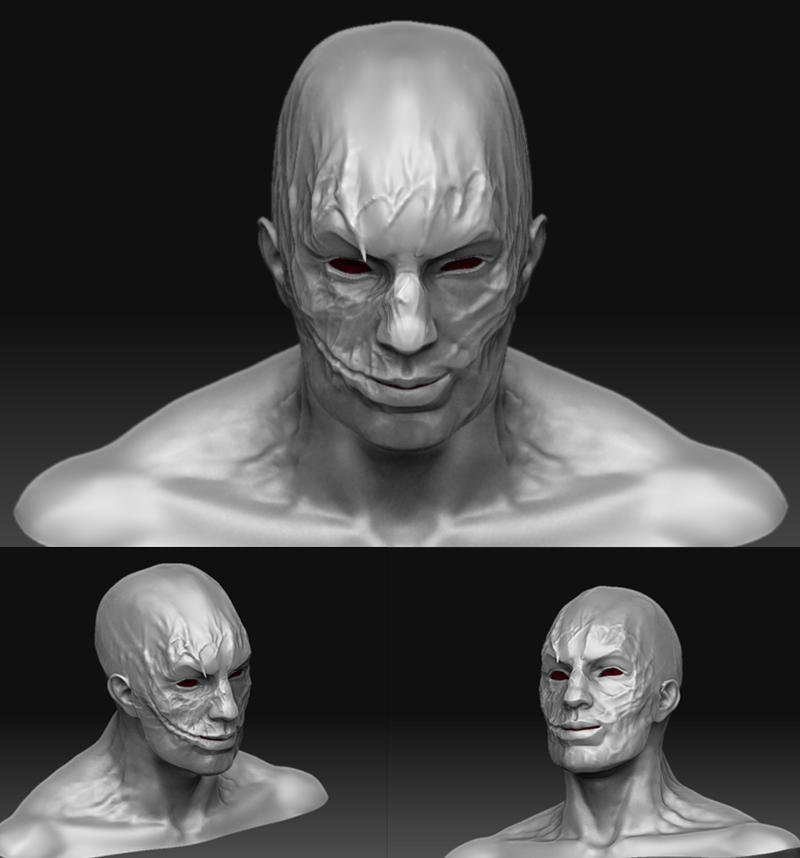
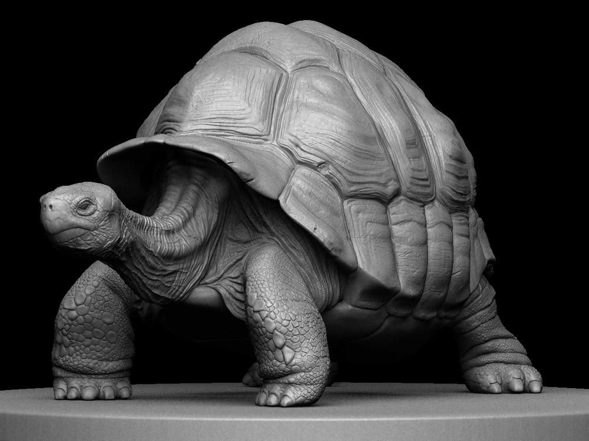
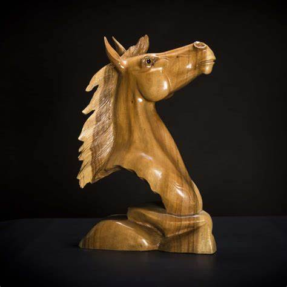

Hello I'm Ashish Deshmukh
A senior-year design student who trying to specialize in 3D modeling & texturing.
Goblin concept digital sculpture with
human-like skin. Learned a lot of quick tips
and look development.
More Shots From This Project ↗

Subsurface weight, specular roughness,
diffuse maps generated with the procedure
and manual techniques.
See Case Study →

Experimental creature modeling for school project.
Project WIP
